Build guide // Flight Tracker 1.0.20
Print, stack, install, fly.
Step-by-step instructions for the compact B case: a 140 mm printed instrument, a Raspberry Pi 4, and a Waveshare 4inch DSI LCD (C). Software is the signed v1.0.20 release.
Purpose-built. Field-proven.
A printable PDF of the assembly sheet is attached on this page. A preview of the same sheet is in the software repository as docs/build/assembly_sheet-web.jpg.
00 — Contents
Nine steps, from parts to first boot.
01 — Parts and hardware
A printed case and a short parts list.
Finished size is about 140 × 155 × 100 mm. Both H2S and A1 print profiles are on MakerWorld, supports off.
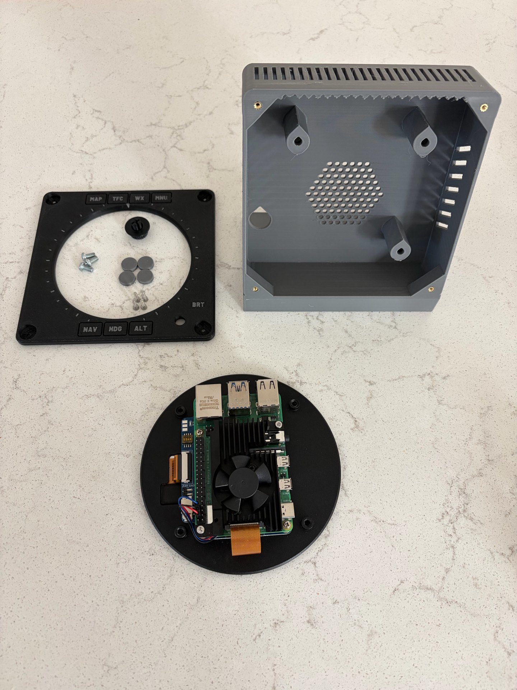
Printed parts
| Part | Colour | Delivery file (print the .gcode.3mf) |
|---|---|---|
| Set A: 140 mm thin faceplate and BRT knob | Black #161616 with Dark Gull Gray #545C61 legend inlays (AMS) | FlightTracker_SetA_faceplate_knob_black_H2S.gcode.3mf |
| Set B: can + foot, and four original dome caps | Dark Gull Gray #545C61 | FlightTracker_SetB_can_caps_gray_H2S.gcode.3mf |
| Optional insert-fit coupon | Gray | FlightTracker_compactB_H2S_insert_coupon.gcode.3mf |
Print both plates from the MakerWorld listing. Set A is the thin faceplate and the knob. Set B is the can and foot, plus the four original ribbed dome caps (caps_fit_v2, Ø12 × 5.51, with a hex dimple) in Dark Gull Gray, matching the photographs. These are the original dome caps, not the later flush (flat) plugs.
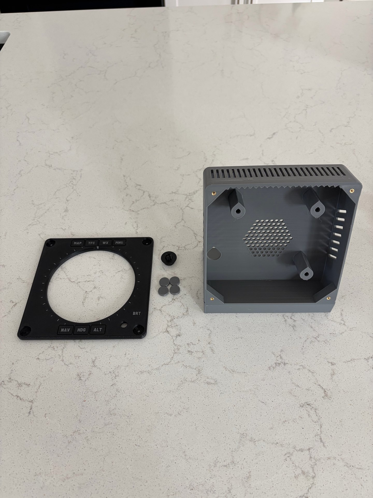
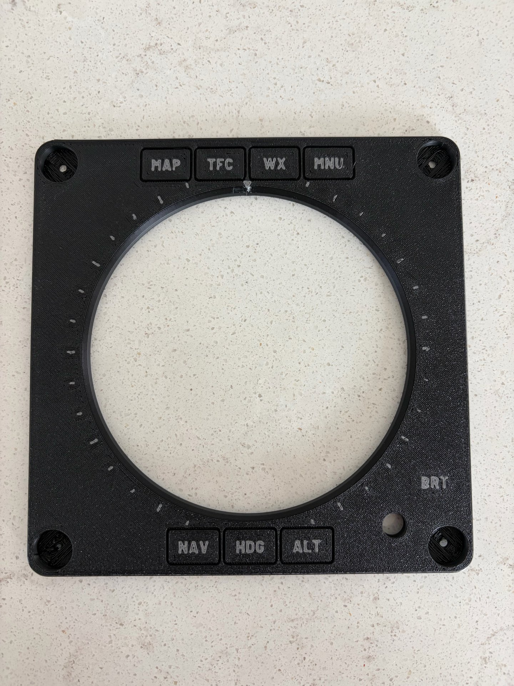
Electronics
| Qty | Part | Notes |
|---|---|---|
| 1 | Raspberry Pi 4 | The installer default is a Pi 4. |
| 1 | Waveshare 4inch DSI LCD (C), 720 × 720 capacitive touch | Confirm the model on the board. This is not the 4-DSI-TOUCH-C. |
| 1 | USB-C power supply suitable for a Raspberry Pi 4, and a microSD card | Raspberry Pi OS Bookworm or Trixie, with a desktop. An “official” supply is not specified in the design files. |
| 1 | USB-C cable, straight plug | 15–20 mm body, cable no thicker than about Ø4.8 mm. No 90° adapter. |
| 1 | Cooling fan and heatsink on the Pi | Waveshare PI4-FAN-PWM (Armor-lite + 3510 fan). Designed around a 17 mm stack plus a 6 mm intake gap. Verified on the built unit: this stack fits and works. |
The Pi screws into the display kit’s own standoffs.
Fasteners
| Qty | Part | Where |
|---|---|---|
| 4 | CNC Kitchen M2.5×4 heat-set inserts (TC-M2.5x4.0) | Front corners of the can. |
| 4 | M2.5×8 socket-head screws, ISO 4762, no washer | Faceplate to the can, under the corner caps. |
| 3 | M4×8 button-head screws, into the display’s own bosses | From the rear, through the three Ø12.1 ports. Clearance is for an ISO 7380 button head. Lower-left mount omitted. Verified on the built unit: 3 × M4×8. |
02 — Printing
Two sets, supports off.
Both H2S and A1 print profiles are on MakerWorld, PLA, supports off. H2S, Set A + Set B — Full case (2 plates): about 5 h 56 m, 224 g. A1 — Full case (2 plates): about 7 h 16 m, 224 g; plate 1 needs AMS lite for the gray legends.
H2S plate times:
| Set | Time | Filament |
|---|---|---|
| Set A, thin faceplate + knob in black (AMS) | 1 h 18 m 51 s | 43.08 g (42.39 g black + 0.68 g grey) |
| Set B, can + foot + 4 dome caps in Dark Gull Gray #545C61 | 4 h 37 m 32 s | 181.13 g |
| Optional insert-fit coupon | 11 m 9 s | 5.53 g |
| Set total (A + B) | 5 h 56 m 23 s | 224.21 g |
Times are slicer predictions. The coupon is extra. Print the .gcode.3mf for your printer. The faceplate prints face-down. Peel the brim. There are no supports to remove.
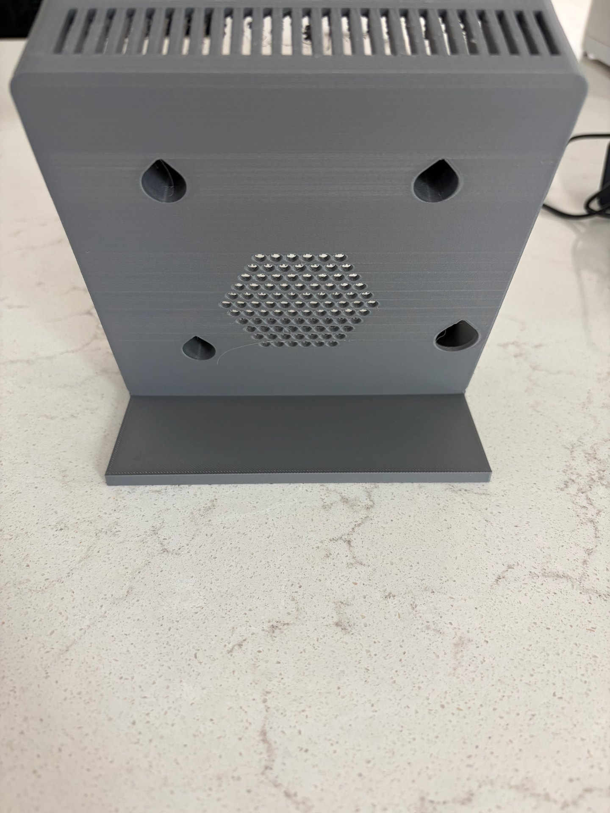
03 — Heat-set inserts
Four inserts, flush and square.
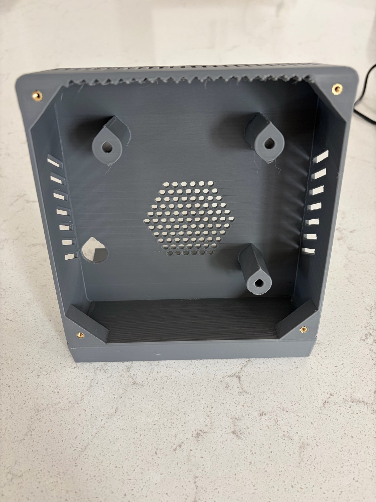
- Stand the can on its foot with the front face up and level, or prop it so the front face is level.
- Use a soldering iron at 10–20 °C above print temperature (CNC Kitchen guidance).
- Go straight down each hole’s own axis, square to the front face. The inserts should need heat.
- Set each insert flush with the column face, and square to it.
- Let the inserts cool before you load the electronics.
Print the optional coupon first if you want to confirm the insert fit.
04 — Mounting
Build the stack, then front-load the can.
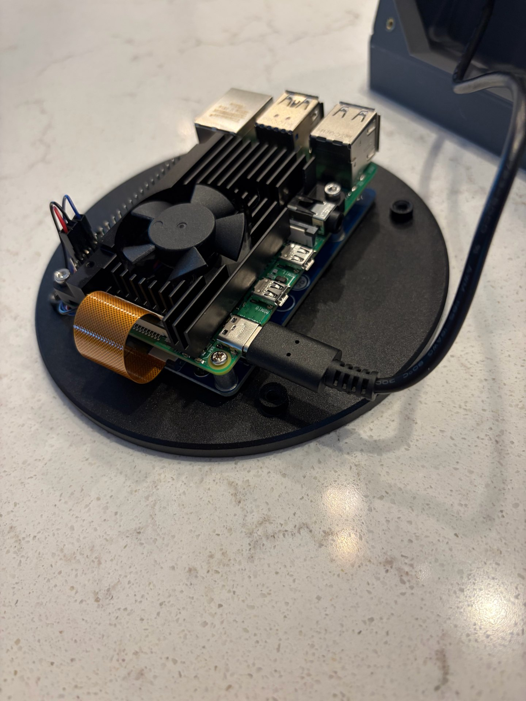
- Mount the Pi on the display kit’s own standoffs. Fit the cooling fan and heatsink if you are using one.
- Connect the 15-pin DSI FPC and the 4-pin 5 V / I2C lead, as in the 4inch DSI LCD (C) wiki. In the photograph the ribbon is looped at the side of the Pi.
- Before you seat the stack, thread the USB-C cable through the Ø15 rear exit from the outside, plug end first. Then plug it into the Pi. The cable makes one gentle bend toward the rear exit.
- Front-load the display, Pi, and fan into the can.
- Fit the three display M4s from the rear through the Ø12.1 ports, into the display’s own bosses. A hex key needs about 30 mm of reach. Snug only.
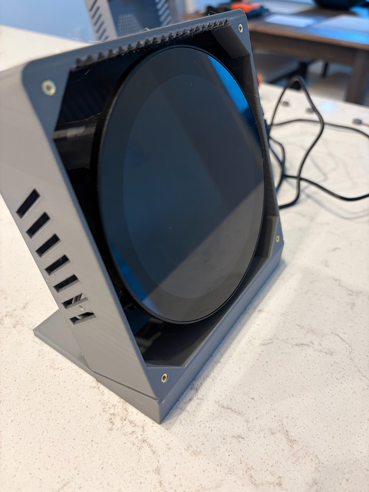
Display orientation in this case: USB-C at the lower left, pointing left. Confirm the board is 4inch DSI LCD (C), not 4-DSI-TOUCH-C.
05 — Closing the case
Faceplate, original dome caps, knob.
Assembly order for the bezel: fit the faceplate, press in the caps, then snap in the knob. The knob goes in from the front, so it can also be fitted with the faceplate still off the can; this guide follows the photographs and presses the caps first.
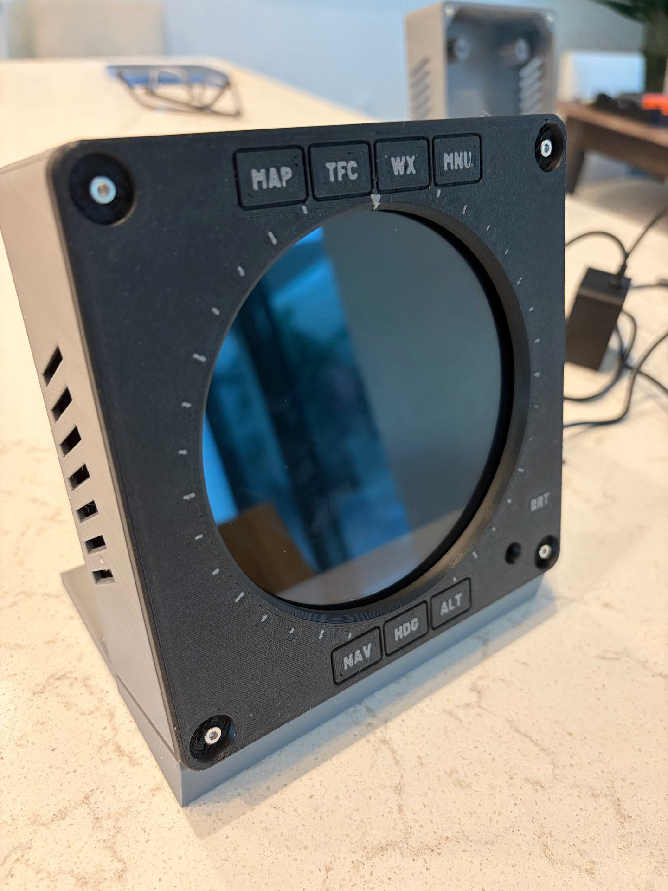
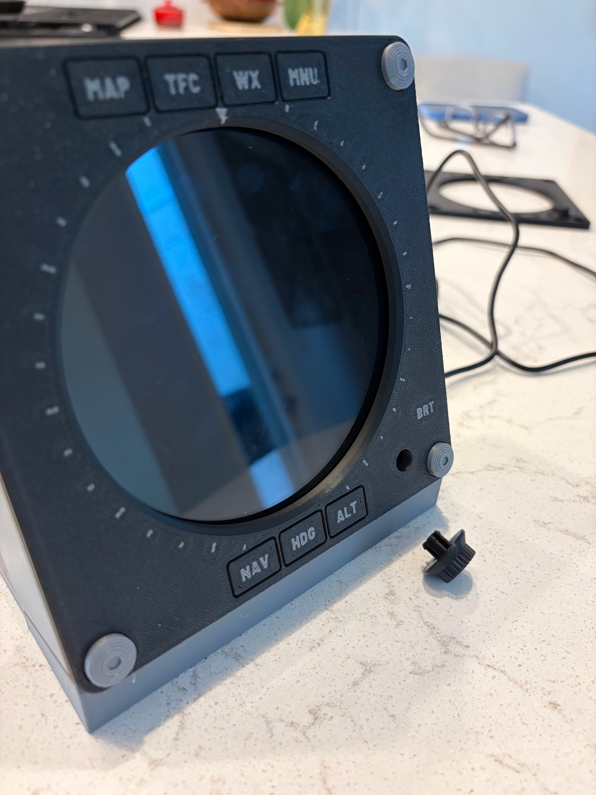
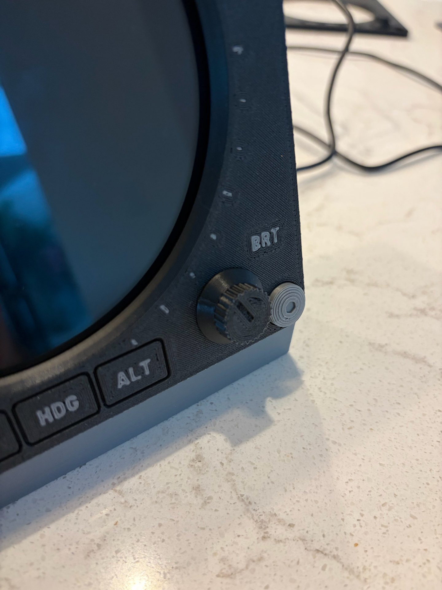
06 — Flashing the OS
Raspberry Pi Imager, then a card in the Pi.
- Use Raspberry Pi Imager 2.0.12 or newer on a computer, not the Pi. Choose Raspberry Pi 4, then Raspberry Pi OS (64-bit), the one with a desktop (Trixie).
- Fill in every customisation step: hostname
flighttracker, your Wi-Fi country, usernameflighttrackerwith a password you will remember (you type it during the install), your Wi-Fi name and password, or nothing if you use Ethernet, and SSH on with password authentication. - Write the card. Take it out and put it back in the computer; a disk named bootfs appears. Check it with
prep-sd-card.sh, below. - Eject the card, put it in the Pi, plug in Ethernet if you use it, and power on. Wait about five minutes. The screen stays blank until the software is installed.
cd ~/Downloads && curl -fsSLO https://raw.githubusercontent.com/MFG001/flight-tracker/main/deploy/prep-sd-card.sh
bash prep-sd-card.shEvery line should say OK. The Wi-Fi line shows the network name in brackets with its length; compare it with your router’s name character for character. Downloading from GitHub needs no account or password. Network names that start or end with a space: Imager drops the space, and the Pi never joins. Rename the network so it has no leading or trailing space and flash again, or run bash prep-sd-card.sh wifi and type the name exactly. An Ethernet cable to your router is the most reliable first install; it needs no Wi-Fi settings.
The installer also sets the hostname to flighttracker and enables Avahi, so the unit answers at flighttracker.local. The first-install script logs in as flighttracker@flighttracker.local, so that username needs to match.
07 — Installing the software
Push the v1.0.20 tarball from a computer on the LAN.
Run these on a Mac or Linux computer on the same network as the tracker, not on the Pi. Download flight-tracker-1.0.20.tar.gz from the v1.0.20 release, or use curl as below. Safari may unzip the download to a .tar file, which also works.
cd ~/Downloads
curl -L -O https://github.com/MFG001/flight-tracker/releases/download/v1.0.20/flight-tracker-1.0.20.tar.gz
tar xf flight-tracker-1.0.20.tar.gz deploy/push-update.sh
bash deploy/push-update.sh ~/Downloads/flight-tracker-1.0.20.tar.gz flighttracker@flighttracker.localThe script asks for the Pi password for SSH, then again when sudo on the Pi asks. This is your own Pi login password, the one you set for flighttracker in Raspberry Pi Imager; it is not a GitHub password. The first time, SSH asks Are you sure you want to continue connecting?; type yes. When it finishes it prints flight-tracker.service is running 1.0.20. Then reboot so the display overlay is applied:
ssh flighttracker@flighttracker.local 'sudo reboot'If flighttracker.local does not resolve, use the Pi’s IP address in place of the hostname, still with the user flighttracker; your router’s client list shows it. If you installed over Ethernet and want Wi-Fi, unplug the cable and reboot: with no Wi-Fi saved, the screen now shows the FlightTracker-Setup QR code (see First setup). You can also clone the repository on the Pi and run sudo bash install.sh; the tarball and push-update.sh are the usual first install from a computer on the LAN.
08 — First setup
Home location, Wi-Fi QR, and updates.
The setup page is http://flighttracker.local/. The scope opens centred on KJFK (latitude 40.6399, longitude −73.7787). Set your own home on the setup page. Save writes /etc/flight-tracker/config.json and the running display picks it up without a reboot.
If the Pi has no saved Wi-Fi, the glass raises a WPA hotspot named FlightTracker-Setup. The password is random per device, eight letters, and is shown under a QR code. When the phone joins, a second QR code opens http://10.42.0.1/. On that hotspot, http://flighttracker.local/ also resolves to the unit. Save the home Wi-Fi there. After the home network connects, the card changes to “Connected” and a QR code for the unit’s current IPv4 address, then closes. Join that same Wi-Fi, then scan or type the address. On the 720×720 round display, the on-device Wi-Fi setup page uses a keyboard fitted inside the glass, with CONNECT just above it. MNU → WI-FI SETUP opens the card again and starts the setup network immediately when saved Wi-Fi is out of range.
The setup page Wi-Fi section lists saved networks. You can forget one, make one preferred, or change a saved password. FORGET SAVED NETWORKS removes every saved profile and starts the setup hotspot. After a grace period of about two minutes at boot, the setup hotspot stays up instead of repeatedly trying a network that is out of range.
In Night, Sunrise and sunset hides the custom From/Until hours and needs a US ZIP code (looked up offline on the device) or exact coordinates, entered in that section, not as the map centre. The page then shows tonight’s dim and bright times for that location, using the device’s clock time zone. You cannot save that mode until a valid location is entered. A unit already using sunrise/sunset without a location keeps its current hours until one is entered.
A daily update check runs at about 09:00 AM Eastern, with up to five minutes of random delay. CHECK FOR UPDATES on the Software card always runs at once. Automatic night installs are off until you turn them on. Releases are Ed25519-signed; no API token is stored on the Pi. A failed health check rolls the previous version back.
09 — Troubleshooting
On-screen steps first.
If the glass is up but the display is stuck or blank, open the setup page and tap RESTART DISPLAY. If you cannot reach the setup page, power-cycle the unit. The first-install rows below are for when push-update.sh cannot reach the Pi. After the software is installed, use the setup page and the on-screen Wi-Fi card rather than logging in with SSH.
| Symptom | What to try |
|---|---|
flighttracker.local does not resolve, and the tracker is not in the router’s client list | It has not joined the network. Before the software is installed there is no QR setup. Use an Ethernet cable, or check the card with prep-sd-card.sh. If the Wi-Fi name starts or ends with a space, rename the network, or fix the card with bash prep-sd-card.sh wifi. The network should offer 2.4 GHz or 5 GHz (not 6 GHz only) and WPA2 or WPA2/WPA3 (not WPA3 only). |
flighttracker.local does not resolve, but the tracker is in the client list | Use its IP address from the list. After the software is installed, the Connected card on the display also shows the unit’s IPv4 address. Check your computer is on the same network. Multicast or mDNS blocking on the router can also stop .local names. |
| The script cannot log in | Hostname and username should both be flighttracker. Enable SSH with password authentication in Imager. The password is the one you set in Imager for flighttracker. |
| The card was flashed without customisation | There is no flighttracker user and SSH is off, so nothing can log in, even over Ethernet. Flash it again and fill in every customisation step. |
REMOTE HOST IDENTIFICATION HAS CHANGED after reflashing | A fresh card has new SSH host keys. Run ssh-keygen -R flighttracker.local (and ssh-keygen -R with the IP address if you used one), then try again. Two units both named flighttracker on one network also clash; use each unit’s IP address, or power one off while you set up the other. |
Safari turned the download into .tar | That is fine. Pass the .tar path to push-update.sh. |
| The display is blank after the first install | Reboot so the Waveshare overlay loads. Confirm the board is 4inch DSI LCD (C). |
| The display hangs on the title or home screen and the program never opens | Power-cycle the unit. This boot hang was fixed in 1.0.16; on an older release, open the setup page when you can and run CHECK FOR UPDATES. |
| The glass is white after an update, or the setup hotspot never starts | That could happen after the 1.0.16 update on some units. If the unit still has a saved network, bring that network in range — a phone hotspot with the same name and password works — then open the setup page and run CHECK FOR UPDATES. 1.0.18 and later also refresh the display service units during an update, so the display opens even if the local server is late. |
| No Wi-Fi after the software is installed | Use the on-screen FlightTracker-Setup QR, then save the home network at http://10.42.0.1/. On the setup hotspot, http://flighttracker.local/ also resolves to the unit. MNU → WI-FI SETUP starts the setup network immediately when saved Wi-Fi is out of range. |
| The unit keeps trying a Wi-Fi network that is no longer valid | On the setup page Wi-Fi section, forget that network, or tap FORGET SAVED NETWORKS to clear every saved profile and start the setup hotspot. Then join a network that is in range. From 1.0.18, after a short grace period at boot the setup hotspot stays up instead of repeatedly retrying the old network. |
| Brightness (BRT) does not change the panel after an update | Run CHECK FOR UPDATES and install 1.0.19 or later, which adds the backlight permission the panel needs. Until then, the glass still dims itself so BRT is not a no-op. |
| An update never appears | Tap CHECK FOR UPDATES on the Software card. The automatic check is at 9:00 AM Eastern. |
| The display does not come back after an update | Open the setup page and tap RESTART DISPLAY, or power-cycle the unit. Then confirm the Software card shows the new version. |
10 — The glass
Sample screens from v1.0.13.
Bundled demo traffic, home at KJFK, 20 NM — not a live feed. Each preview sits on a different background. Tap the tail-number label, not the aircraft icon, for the detail card.
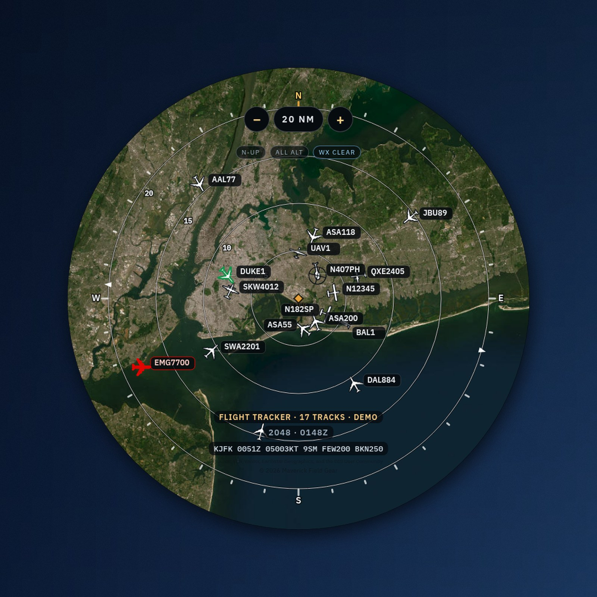
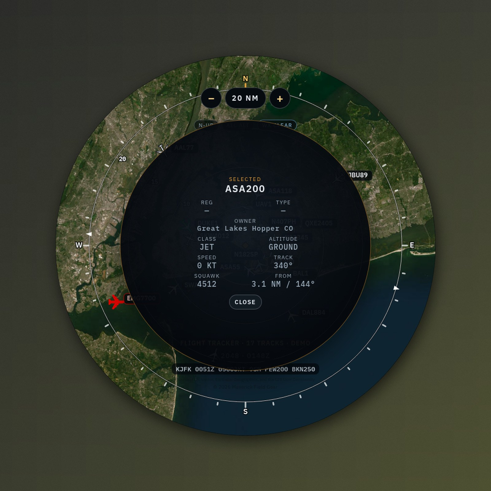
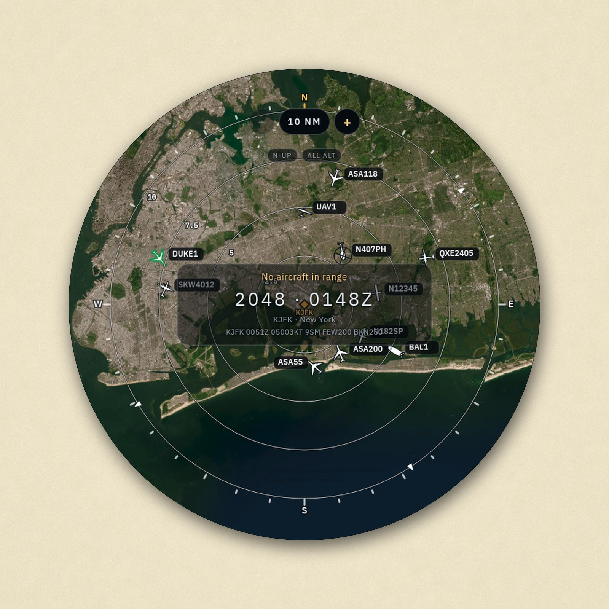
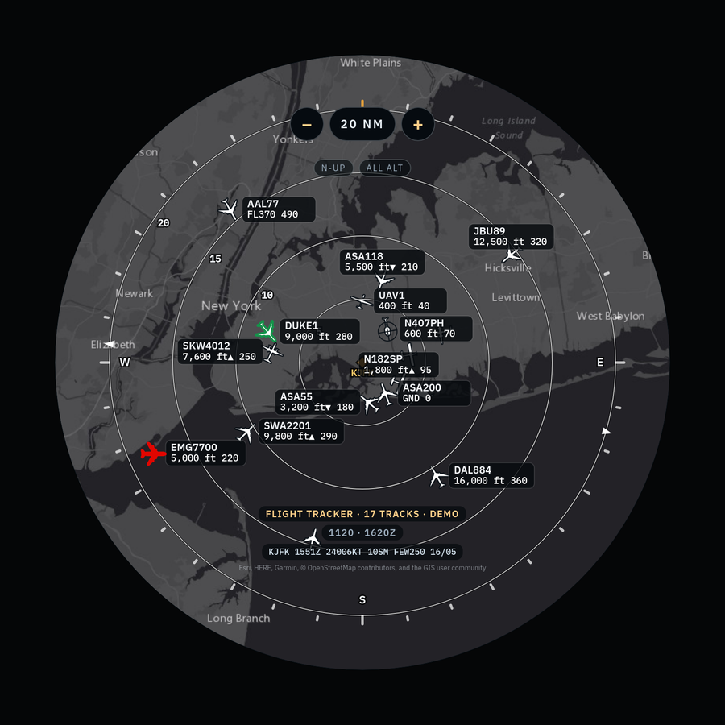
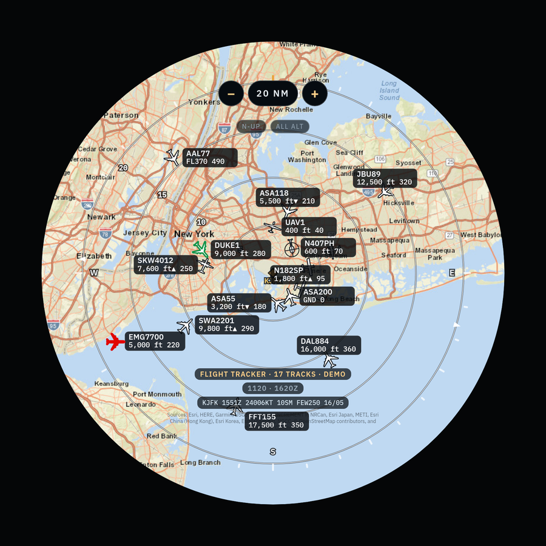
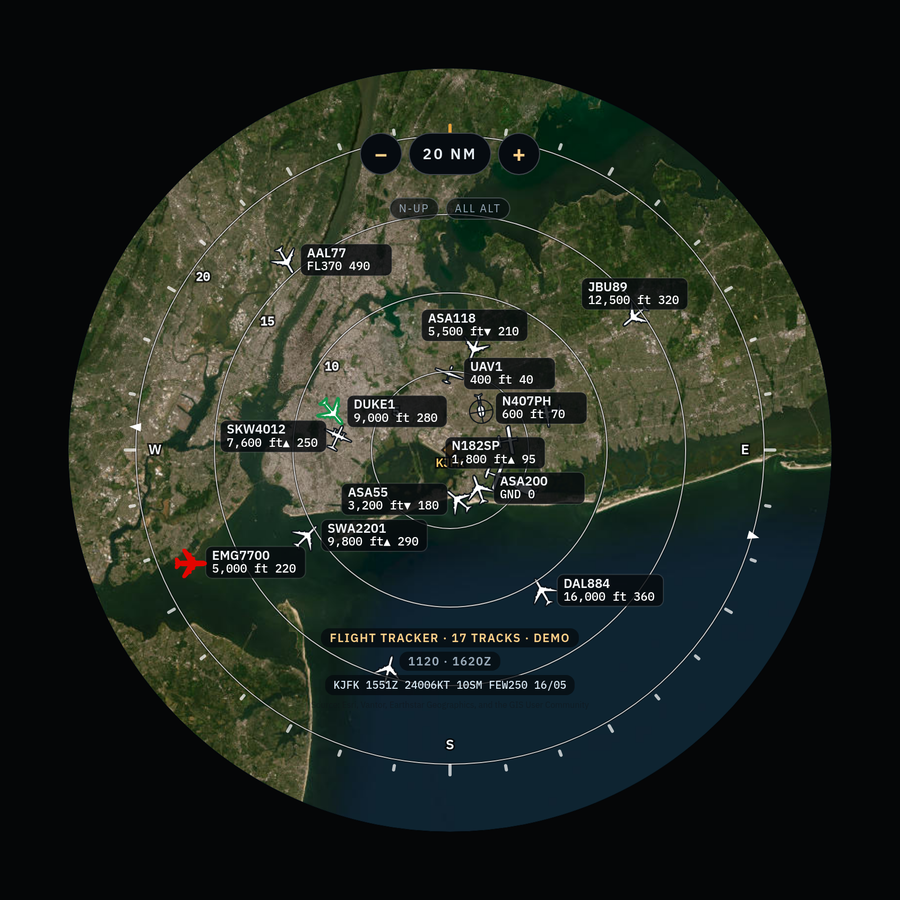
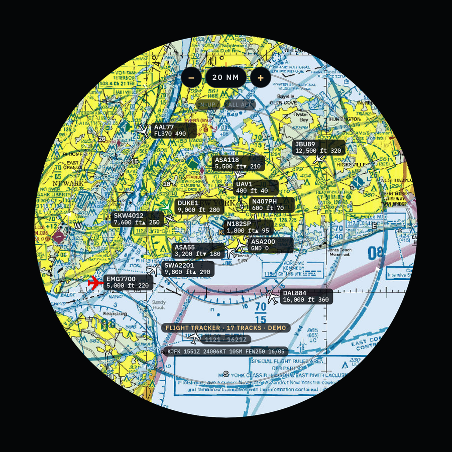
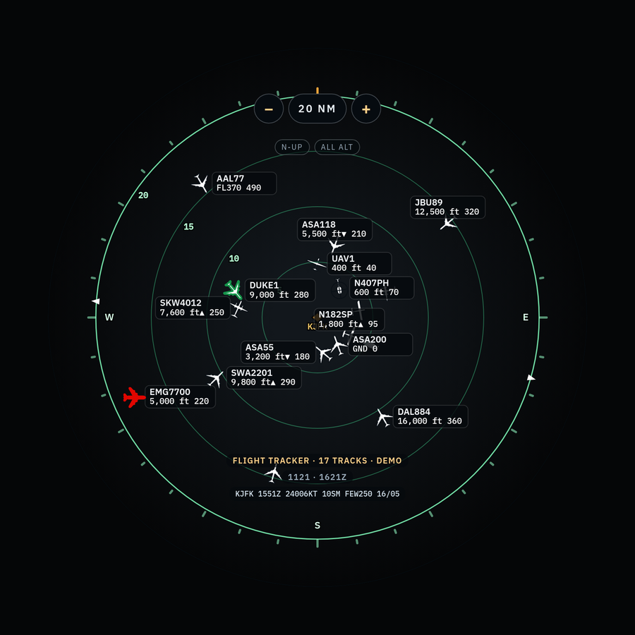
11 — Verified, and still open
What the built unit confirmed.
Verified on the built unit. The three rear display screws are M4×8 button heads, into the display’s own bosses. The cooling stack is a Waveshare PI4-FAN-PWM (Armor-lite + 3510 fan); the 17 mm height the case was designed around, with a 6 mm intake gap, fits and works.
Still unverified. USB-C plug body length: 15–20 mm all fit by design; the photographs show a straight plug in place. First boot on the physical 720 × 720 panel, touch alignment, Avahi, the setup hotspot, and a real over-the-air install were not verified in this environment. The repository README lists those items in full.